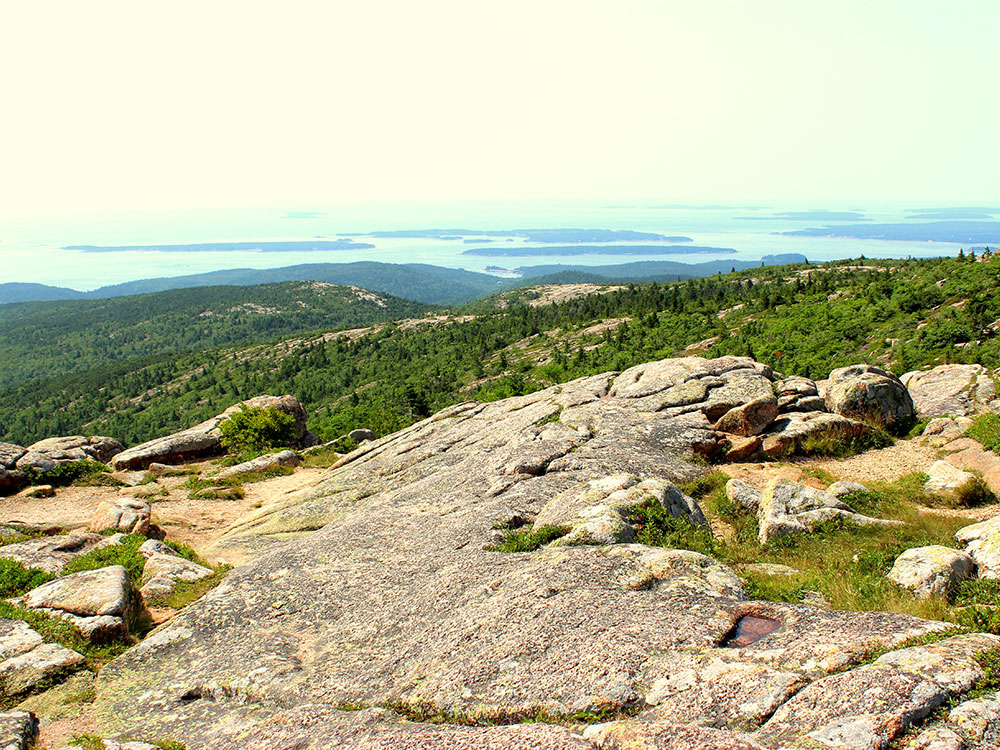
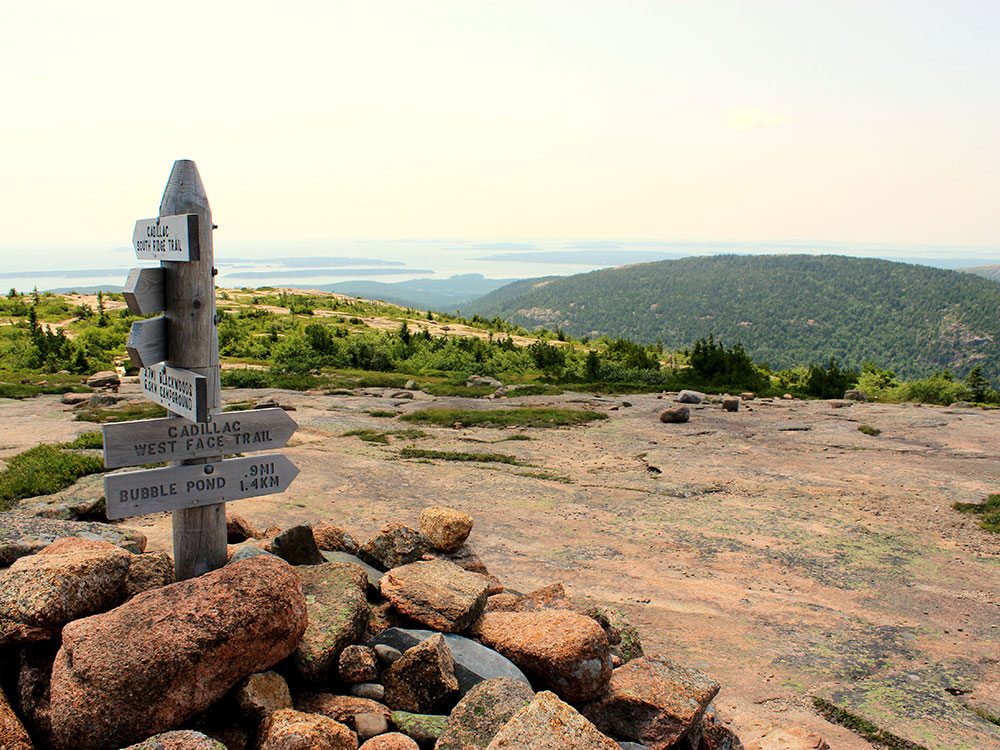
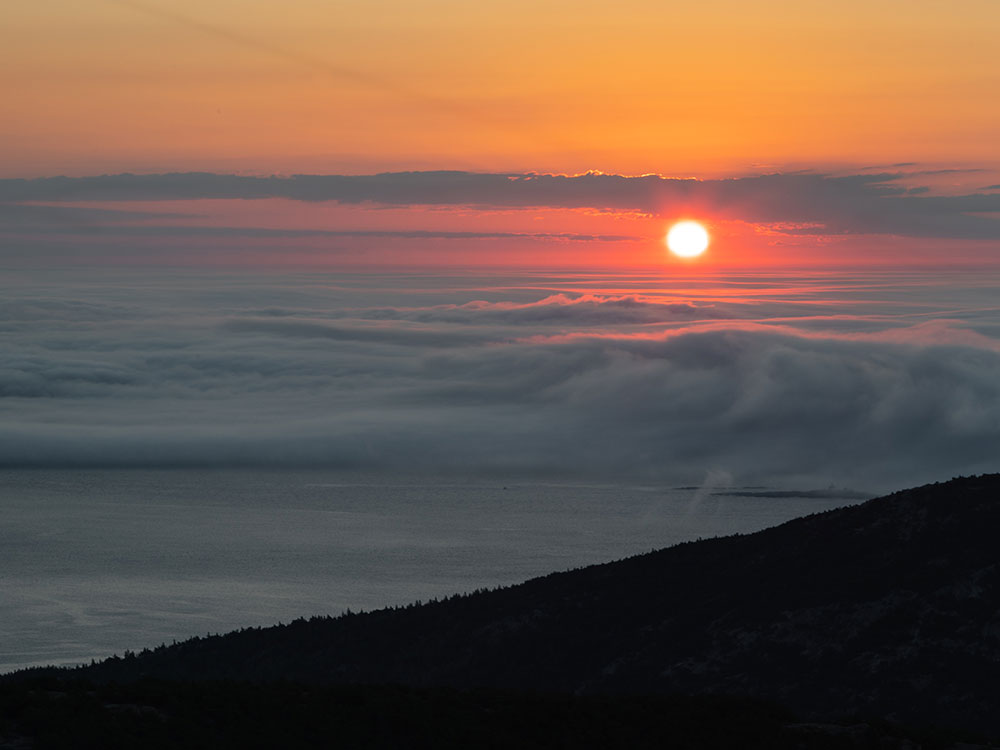

Located within Acadia National Park, its summit is the highest point within 25 miles (40 km) of the Atlantic shoreline and known as the first place in the U.S. to see the sunrise
General Information
Head west on Eagle Lake Rd toward Cleftstone Rd. Turn right onto Cadillac Entrance Rd. Turn left onto Paradise Hill Rd. Turn left to stay on Paradise Hill Rd. Paradise Hill Rd turns slightly right and becomes Park Loop Rd. Turn left onto Cadillac Summit Rd.
Overview
Cadillac Mountain is located on Mount Desert Island, within Acadia National Park, in Maine. With an elevation of 1,530 feet (466 meters), its summit is the highest point in Hancock County and the highest within 25 miles (40 km) of the Atlantic shoreline of North America between the Cape Breton Highlands, Nova Scotia and peaks in Mexico. It is known as the first place in the U.S. to see the sunrise, although that is only true for a portion of the year.
Before being renamed in 1918, the mountain had been called Green Mountain. The new name honors the French explorer and adventurer Antoine de La Mothe Cadillac. In 1688, De la Mothe requested and received from the Governor of New France a parcel of land in an area known as Donaquec which included part of the Donaquec River (now the Union River) and the island of Mount Desert in the present-day U.S. state of Maine. Antoine Laumet de La Mothe, a shameless self-promoter who had already appropriated the "de la Mothe" portion of his name from a local nobleman in his native Picardy, thereafter referred to himself as Antoine de la Mothe, sieur de Cadillac, Donaquec, and Mount Desert.
From 1883 until 1893 the Green Mountain Cog Railway ran to the summit to take visitors to the Green Mountain Hotel. The hotel burned down in 1895 and the cog train was sold and moved to the Mount Washington Cog Railway in New Hampshire.
Overview
There are various hiking trails and a paved road that lead to the summit of Cadillac Mountain. Going to the summit to see the first sunrise in the U.S. is a common activity; however, Cadillac only experiences the first sunrise from October 7 through March 6. For a few weeks around the equinoxes, the sun rises first at West Quoddy Head in Lubec, Maine. During the remainder of spring and throughout summer, the sun rises first on Mars Hill, 150 miles (240 km) to the northeast.
Cadillac Summit Road Vehicle Reservations
The Cadillac Summit Road Vehicle Reservation System manages vehicle access to the summit of Cadillac Mountain in Acadia National Park. The reservation program was implemented to address increasing visitation, parking congestion, and traffic issues at one of the park's most popular destinations. Visitors driving to the summit must obtain a vehicle reservation in addition to a valid park entrance pass.
Cadillac Summit Road provides a scenic three-mile drive to the highest point in Acadia National Park. Vehicle reservations are required only for access to Cadillac Summit Road and do not apply to other areas of the park. Visitors arriving by foot, bicycle, or taxi do not need a vehicle reservation.
Reservation Requirements
- Vehicle Reservation Required: Reservations are required for vehicles driving Cadillac Summit Road during the reservation season.
- Separate Entrance Pass Required: A valid Acadia National Park entrance pass is required in addition to the vehicle reservation.
- Reservation Applies Only to Cadillac Summit Road: Other destinations within the park do not require this reservation.
- Alternative Access: Visitors traveling by foot, bicycle, or taxi may access the area without a vehicle reservation.
Types of Reservations
Vehicle reservations are available for both sunrise and daytime visits. Each reservation provides access during a designated entry period and is tied to a specific vehicle.
- Sunrise Reservations: Allow visitors to drive to the summit for sunrise viewing.
- Daytime Reservations: Provide access during designated daytime entry periods.
- Per Vehicle: Reservations apply to a vehicle rather than individual passengers.
Reservation Availability
Reservations are sold online through Recreation.gov using a two-phase release schedule that provides opportunities to reserve well in advance or shortly before a visit.
- Advance Release: Approximately 30 percent of reservations become available 90 days before the reservation date.
- Short-Term Release: Approximately 70 percent of reservations become available two days before the reservation date.
- Release Time: Reservations are released at 10:00 AM Eastern Time.
- Advance Planning Recommended: Sunrise reservations are typically the most popular and may sell out quickly.
How the Reservation System Works
- Timed Entry: Vehicles must enter during the time period indicated on the reservation.
- QR Code Verification: Reservation confirmations include a QR code that is scanned upon arrival.
- Digital or Printed Confirmation Accepted: Visitors should save or print their reservation confirmation before arriving.
- Limited Connectivity: Cellular and internet service may be unreliable within the park.
- No Re-Entry: Reservations are generally valid for a single entry period and do not allow re-entry.
Vehicle and Parking Information
The summit area includes designated parking lots, scenic overlooks, walking paths, and panoramic views of Acadia National Park and the surrounding coastline. Vehicle reservations provide access to the area but do not guarantee a specific parking space.
- Parking Available: Summit parking is available in designated lots.
- No Assigned Spaces: Reservations do not reserve a specific parking spot.
- Designated Parking Only: Vehicles must park in marked parking spaces.
- Vehicle Restrictions: Vehicles exceeding length restrictions, including many recreational vehicles and trailers, are prohibited on Cadillac Summit Road.
Road Rules and Safety
- Speed Limit: Drivers must observe posted speed limits while traveling on Cadillac Summit Road.
- Share the Road: Motorists must use caution around pedestrians and bicyclists.
- Scenic Pullouts: Several designated overlooks are available along the route to the summit.
- Follow Ranger Instructions: Visitors should comply with all traffic and parking directions provided by park staff.
Fees
Vehicle reservations are purchased separately from park entrance passes. Both are required for visitors driving to Cadillac Mountain via Cadillac Summit Road.
- Vehicle Reservation Fee: $6 per vehicle.
- Entrance Fee Required: A valid park entrance pass or qualifying federal recreation pass must also be presented.
- Online Purchase Only: Vehicle reservations must be purchased through Recreation.gov and are not sold at the park.
This article uses material from National Park Service and Recreation.gov resources describing the Cadillac Summit Road Vehicle Reservation System at Acadia National Park, including reservation requirements, vehicle access procedures, reservation availability, fees, and visitor information. Sources: Acadia National Park National Park Service Cadillac Summit Road Vehicle Reservations page and Recreation.gov Cadillac Summit Road Vehicle Reservation resources.
This article uses material from the Wikipedia article "Cadillac Mountain", which is released under the Creative Commons Attribution-Share-Alike License 3.0




